Action USA

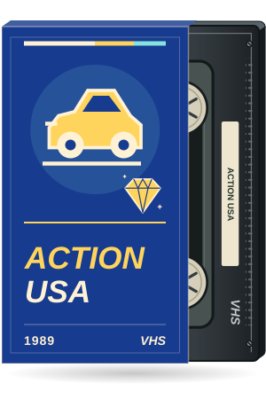
A stunt car leaps from an elevated freeway through a Texas city at sunset.
All 69 movies, including the 53 newly illustrated sleeves and the unchanged 16 approved 2026 designs. Left: archived previous artwork. Right: the original illustrated sleeves now used on the event pages, with IMDb-inspired lettering and fitted vector tape labels. Choose a large view or actual desktop/mobile thumbnail sizes below.

A stunt car leaps from an elevated freeway through a Texas city at sunset.
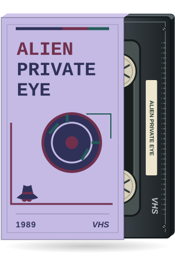
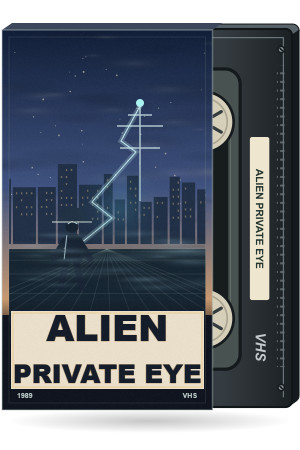
An anonymous fedora-wearing detective follows an electric-blue trail toward a rooftop transmitter.

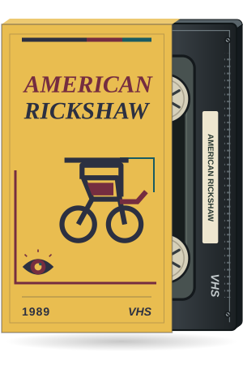
An empty rickshaw crosses a wet neon waterfront beneath a floating jade charm.
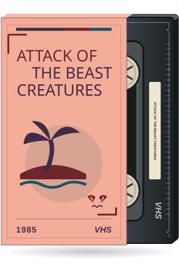

Small red-eyed island creatures watch castaways beside a wrecked lifeboat.


An original raster sleeve with a black VHS tape partly pulled out to the right. Two anonymous profiles face a suspended cell in a midnight laboratory.
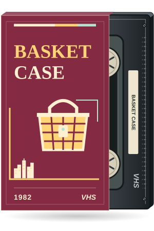
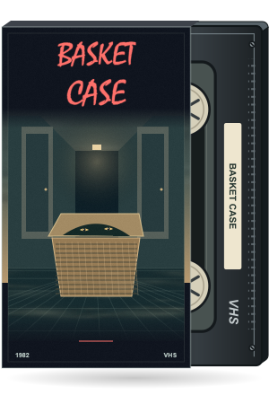
A wicker basket opens in a narrow hotel corridor, revealing two watchful eyes.

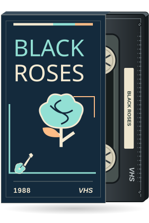
A rose-covered electric guitar rises from a deserted stage in violet mist.
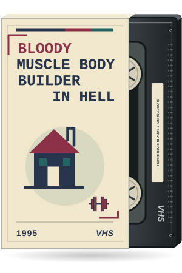
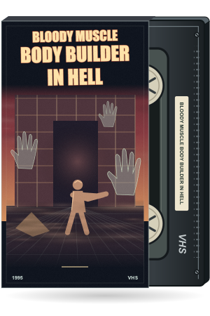
A lone strongman faces spectral hands in a ruined Japanese house.


An original raster sleeve with a black VHS tape partly pulled out to the right. Three cyclists race along a curving concrete canal beside a walkie-talkie.
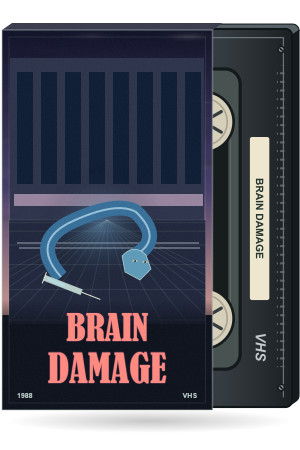
A glowing blue parasite coils beside a discarded syringe on a subway platform.
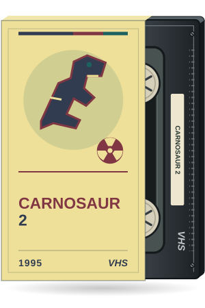

A dinosaur silhouette looms between steam pipes in an underground industrial facility.
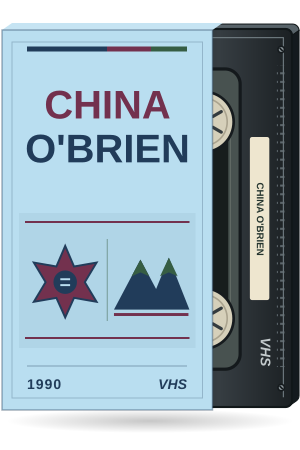

A martial artist stands at the end of a rain-darkened main street beneath mountain ridges.
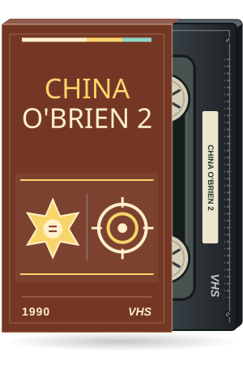

Two defenders meet on a timber bridge over a moonlit mountain river.

A security robot patrols an empty shopping atrium, its laser reflected in the tiled floor.
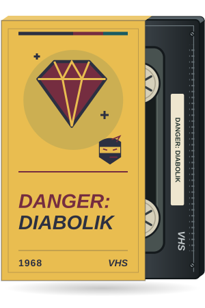
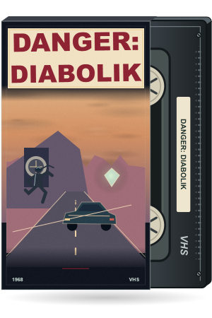
A masked jewel thief escapes a cliffside vault in a sleek sports car.


An original raster sleeve with a black VHS tape partly pulled out to the right. A farmhouse door stands in a field as ghostly hands spiral out of the storm.

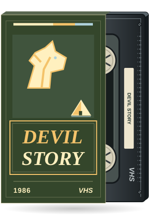
A shrouded figure walks between a derelict castle, a black horse, and an open ancient tomb.

An ornate dagger hovers above a bedroom as cold light pours through its doorway.


An original raster sleeve with a black VHS tape partly pulled out to the right. A desert highway, three dangerous silhouettes, and a parked sports car.

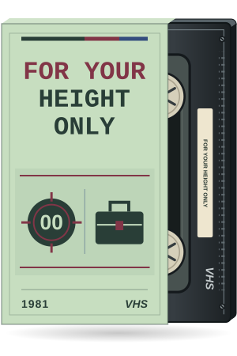
A small secret agent races across a rooftop beside an enormous radio antenna.
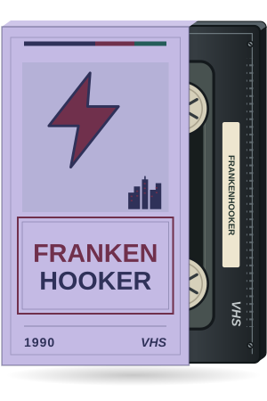
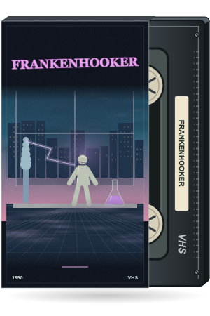
A violet-lit laboratory overlooks the city while a lightning coil illuminates a stitched mannequin.


An original raster sleeve with a black VHS tape partly pulled out to the right. An electromagnetic resonator opens a magenta portal filled with impossible eyes.
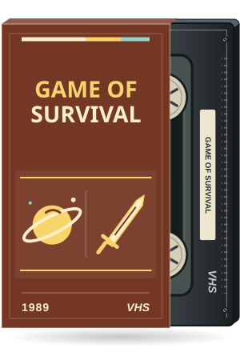
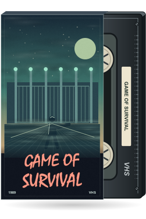
Six alien beacons surround a lone traveler in an abandoned industrial arena.
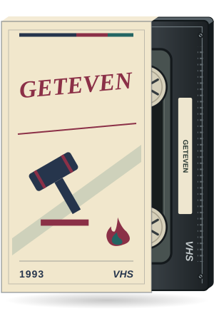

A champagne bottle and two glasses overlook a neon marina and a distant pursuit.
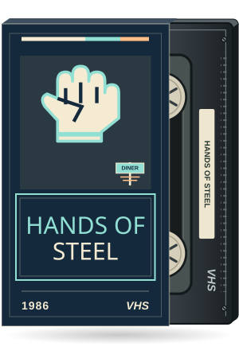

A mechanical hand emerges above a desert highway and a damaged roadside diner.
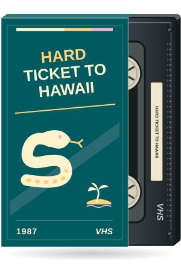

A seaplane skims a tropical cove while a coiled snake watches a diamond case on the sand.
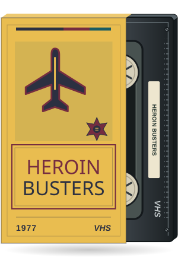

An undercover investigator follows a courier through railway arches toward a propeller plane.
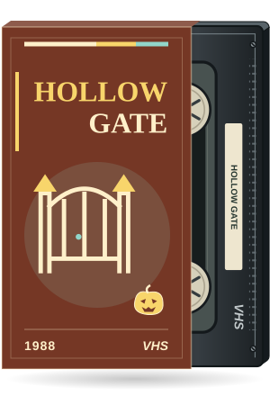

A locked wrought-iron gate frames a haunted house and a solitary glowing jack-o-lantern.
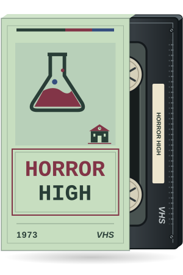

A chemistry flask casts a monstrous shadow through an empty school laboratory.


An original raster sleeve with a black VHS tape partly pulled out to the right. A lone defender on a palm-lined causeway facing a burning city.
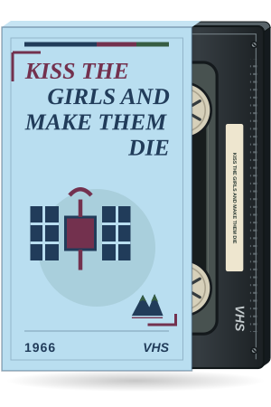

A cable car crosses Rio at sunset below an ominous satellite.
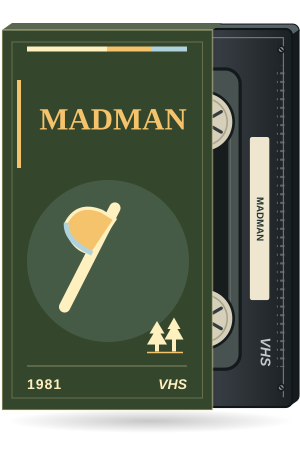
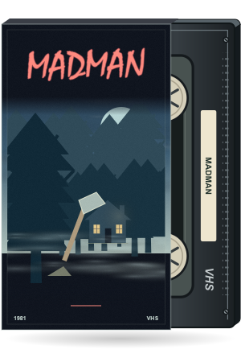
An axe rests against a tree outside a deserted camp cabin in blue fog.
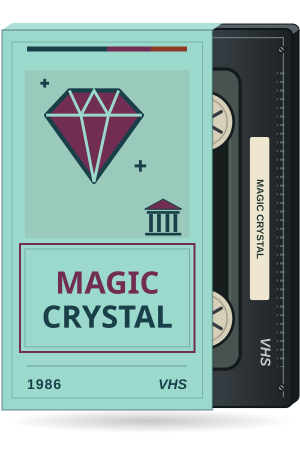
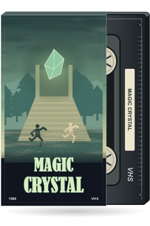
A luminous green crystal floats above a ruined temple as two adventurers climb its stairway.


An original raster sleeve with a black VHS tape partly pulled out to the right. A marina at sunset, a yacht, and a red sports car seen from above.

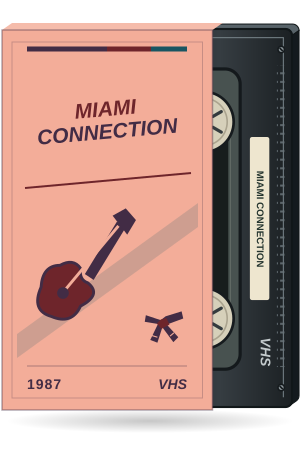
A rock band plays beside a moonlit waterfront as motorcycles approach beneath the palms.
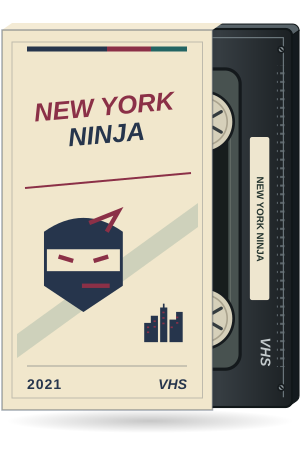
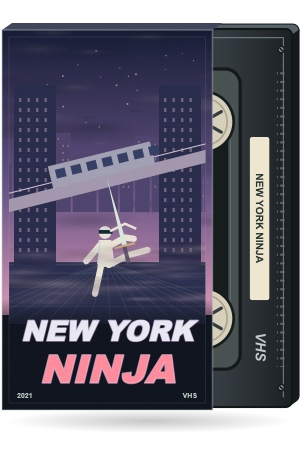
A white-clad ninja watches an elevated train curl through a rain-soaked New York canyon.
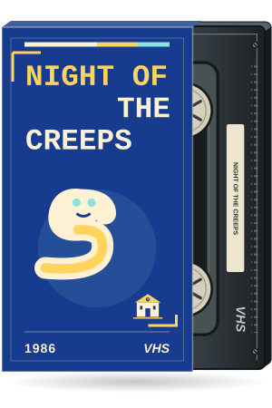
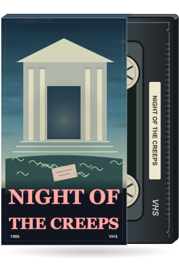
A college portico glows over a lawn crossed by luminous slugs and a fallen dance invitation.

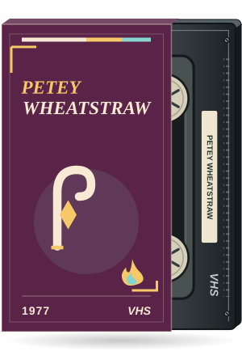
A sharply dressed comedian faces a red pitchfork in a fiery midnight theater.
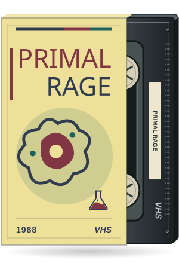
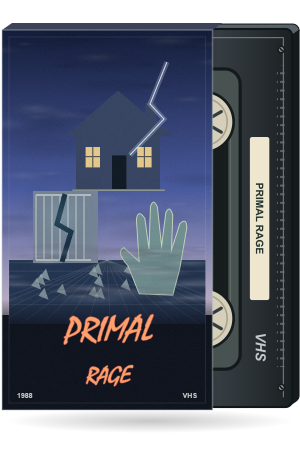
A broken laboratory cage overlooks a college campus beneath a gathering electrical storm.

A BMX rider launches over a wooden race ramp high above a mountain town.
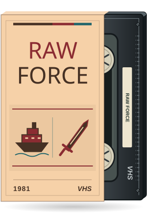

A martial artist steps from a wrecked boat toward a misty island shrine guarded by spectral warriors.


An original raster sleeve with a black VHS tape partly pulled out to the right. A storm-lit field, a cracked standing stone, and a looming ancient creature.
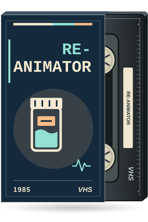

A glowing green syringe lights a deserted anatomy table and a wall of laboratory glassware.
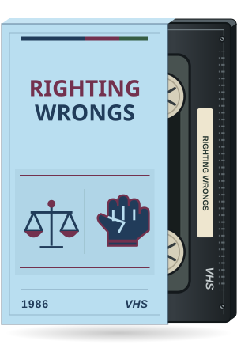

Two martial artists clash above a courthouse stairway while a small plane banks overhead.
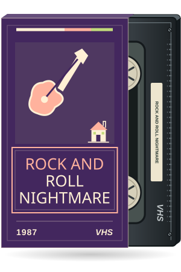
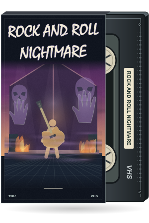
A guitarist stands inside a barn as demonic silhouettes curl through the stage smoke.

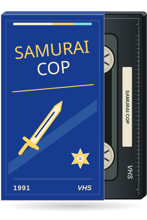
A sword divides a Los Angeles rooftop, a police car, and a glowing sunset.


An original raster sleeve with a black VHS tape partly pulled out to the right. A stranded cargo plane, a remote lagoon, and a half-buried gold chest.


An original raster sleeve with a black VHS tape partly pulled out to the right. An original theatrical mask floats above a New York street, gold fabric, and a badge.
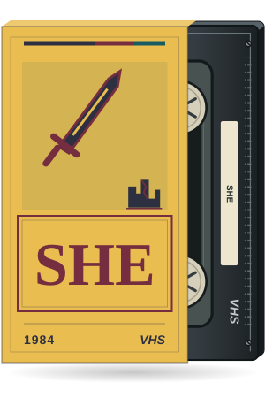
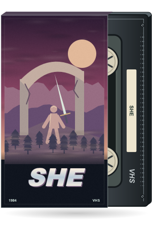
A warrior with a sword approaches a ruined arch in a wild post-apocalyptic landscape.

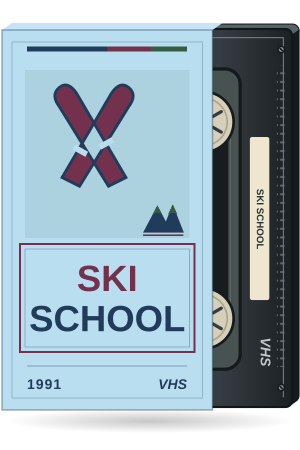
Two skiers weave between colorful slalom gates beside a sunlit alpine lodge.
An abandoned jeep and a mysterious book wait in a wind-tossed tropical forest.

A jester mask hangs on a locker beside an empty school corridor and a forgotten reunion banner.
An abandoned sneaker hangs from a dock above a still lake and distant camp cabins.

An old mansion rises beyond broken gravestones while spectral faces drift through its windows.
A lone motorcycle heads toward a courthouse beneath ranks of shadowy riders.


An original raster sleeve with a black VHS tape partly pulled out to the right. A discarded bottle throws unnatural color over a nocturnal junkyard.

An investigator stands before a fractured mirror, her silhouette echoed in warm city windows.


An original raster sleeve with a black VHS tape partly pulled out to the right. An abandoned school bus, pursuit lights, and smoke over a small town.
A dazzlingly dressed performer rises above a city as a golden whirlwind lifts a hat and cane.
A martial artist trains among burning barrels, broken concrete, and an industrial crane.


An original raster sleeve with a black VHS tape partly pulled out to the right. A skater hangs over an illuminated downhill road through Los Angeles.


An original raster sleeve with a black VHS tape partly pulled out to the right. A goblin shape hides in the forest behind a farmhouse and an ominous picnic.

Two identical anonymous silhouettes face a fractured digital skyline and a hovering surveillance drone.

A fighter waits inside a deserted boxing gym beneath a single lamp and red brick arches.

An ominous cat watches a luxury yacht from a pier while moonlight streaks the water.

A dinosaur shadow stretches behind a priest on a church path under a volcanic sky.


An original raster sleeve with a black VHS tape partly pulled out to the right. Two fugitives move through a rain-swept neon alley beneath the city skyline.


An original raster sleeve with a black VHS tape partly pulled out to the right. Two investigators cross a glass-filled office with stolen microfilm in the foreground.

A lone figure rises beyond a graveyard as blue candles lead toward a moonlit mausoleum.